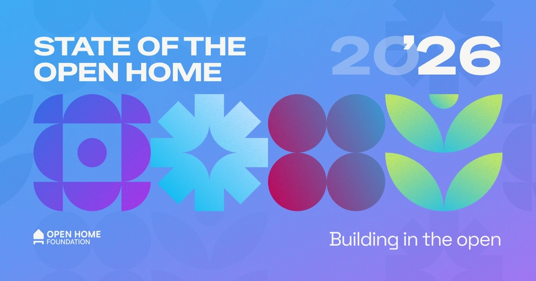
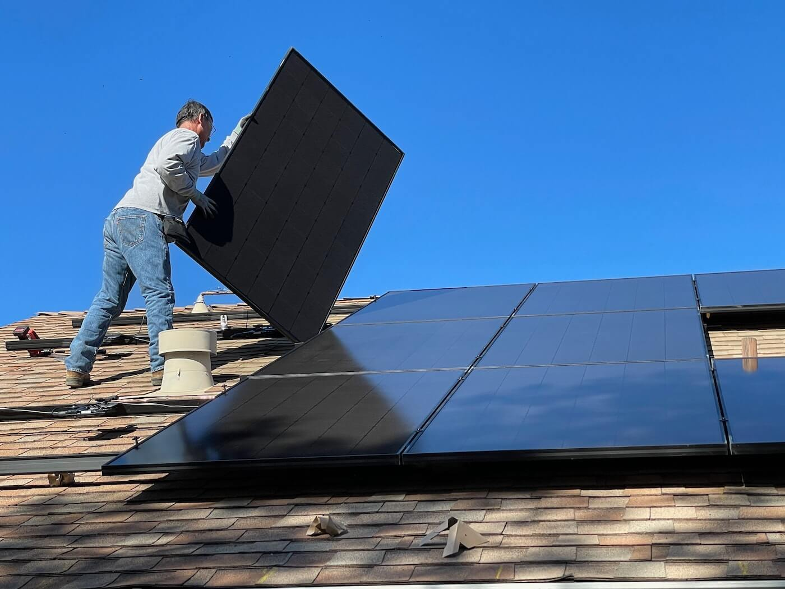

我用 Home Assistant 把回家那三分钟缩成了一个语音词
以前每天进门要开空调、调灯光、查空气质量、抄电表、发群通知，五个动作各管一套；现在一条自动化链搞定，连电表都不用碰
每天下班进门那三分钟，我以前是这么干的：掏手机开空调 App、走到玄关按一下智能灯开关、打开空气质量检测仪看一眼数值、翻出家里的电表拍张照、再去家庭群里发一条"今日用电 XX 度"。五个动作、五个 App、三个不同品牌的设备，偶尔哪个 App 抽风连不上 Wi-Fi，就得手动去按实体开关。
这套流程我忍了大半年才下决心换 Home Assistant。不是说 Home Assistant 比其他智能家居 App 好用一点——它好用很多——而是我终于意识到：我根本不需要五个独立的 App，我需要的是一条能自己跑完的链。
旧流程的问题
复盘一下以前的痛点：
设备不联动。米家空调能连 Wi-Fi，但我的 Yeelight 灯不在米家生态里；空气质量检测仪是青藤的 App，电表又是物业送的独立系统。想让"空气闷就自动开新风"？我得在三个 App 之间手动桥接，靠手机定时转发。
状态不可见。回家前我不会提前开空调，因为我不知道路上堵不堵；到家后才开，等二十分钟才凉下来。想让"我离家两公里时自动开空调"？没有一个 App 能同时读到我的手机定位和空调状态，还能自动触发。
自动化不会写。米家的自动化是图形界面拖拖拽拽，能做"温度超过 30 度开空调"这种简单逻辑，但"我在家且是晚上且客厅没人时自动关灯"——三个条件组合起来，图形界面就绕晕了。更不用说"或"逻辑、嵌套条件、模板判断这些复杂场景。
数据出不去。电表数据只能在物业 App 里看，想让它和 Home Assistant 联动、自动算日用电、自动发群通知？以前得在电表上装个读卡器，再写个 Python 脚本定时爬数据，手动推到飞书。每周要跑一次维护，偶尔脚本挂了还得手动补数据。
新流程：Home Assistant 当中枢
Home Assistant 的核心定位是智能家居的操作系统——它不直接生产设备，而是把所有设备的状态集中到一个地方，然后用一套统一的自动化引擎把它们串成链。想了解它能连哪些品牌、有哪些现成集成，可以去Home Assistant官网扫一眼，覆盖面确实惊人。我装的时候直接从官方下载拿 Home Assistant OS 镜像刷进了 N100 小主机，一条命令就起来了。我的新流程大概是这样：

感知层（ESPHome 传感器）。空气传感器是自己用 ESP32-S3 + SCD40（CO₂）+ BME280（温湿度气压）+ PMS5003（PM2.5）攒的，成本不到两百块。刷 ESPHome 固件的时候只写 YAML 配置，编译刷写一气呵成；刷好后 Home Assistant 通过局域网加密通信自动发现，三个实体（温度/湿度/PM2.5）直接出现在面板上，零配置。
电表这块我一开始想用 ESPHome + 霍尔传感器 DIY 抄表器，后来发现 Home Assistant 有现成的 REST 集成能直接调物业 App 的接口——只要物业 App 不封 IP，每天自动拉一次读数。
逻辑层（自动化引擎）。Home Assistant 的自动化引擎是 YAML 写的，条件支持 AND/OR/NOT 嵌套、支持 Jinja2 模板写任意逻辑。我用了两条核心自动化：
第一条是"回家场景"，触发器是手机定位进入家庭区域，条件是"时间在晚上 6 点到 11 点之间"，动作链是：开客厅灯 → 调空调到 26 度 → 读一次空气质量 → 如果 PM2.5 超过 75 就开新风。这条链里如果任何一步失败，Home Assistant 会在后台报错但不中断后续步骤——我不用盯着手机等每一步确认。
第二条是"每日用电日报"，触发器是每天晚上 10 点，条件是"我在家（避免出差时误报）"，动作是把电表读数算出来、查一下当天的太阳能发电量（如果装了光伏板的话）、拼成一段文字发到飞书家庭群。
语音层（Ollama + Assist）。Home Assistant 自带的语音助手只能理解结构化指令，说"今天有点暗了"它听不懂。我给它接了本地 Ollama，Pull 了 qwen2.5:7b 模型，在 System Prompt 里写了一段人设：叫"小管家"，语气亲切，能主动汇报状态。这样回家进门说一句"小管家，我回来了"，它会自动执行回家场景的整条链，还会补一句"客厅湿度 55%，挺舒服的"。
实操细节：两个容易断链的环节
ESPHome 传感器的联网稳定性
ESP8266/ESP32 刷好固件后偶尔会掉线重连，这段时间 Home Assistant 读到的实体状态会变成"unavailable"。我踩过两个坑：
一是 WiFi 密码直接写在 YAML 里，换路由器时要挨个刷固件。现在用 secrets.yaml 单独存密码，改一处就行——这个机制我也是翻了Home Assistant文档才知道的，之前硬编码了半年多，换路由器时折腾了一下午。二是传感器的 update_interval 设成 30 秒但 WiFi 信号差时可能超时，我后来加了 filters: sliding_window_moving_average，用 10 次采样做滑动平均，信号抖动时读数不会跳。
自动化条件的防误触发
Home Assistant 的触发器命中后先检查条件，条件不满足就跳过这次。但如果我的手机定位偶尔漂到了家庭区域边界（比如小区门口），回家场景就会误触发。解决办法是给区域加了 zone: zone.home，再叠加 time: after: "18:00:00" before: "23:00:00"，两个条件 AND 组合——只有真的回家且时间在晚上才触发。
还有一个容易忽略的点：条件不会排队。如果我刚好在晚上 6 点整走进家门，触发器命中时 Home Assistant 会瞬间检查条件；但如果 Home Assistant 那一瞬间刚好在扫描网络、CPU 高占用，条件检查可能慢半拍——这时触发器已经过了，条件检查结果出来也没用。我的做法是给触发器加 for: 5s，让 Home Assistant 在触发前确认条件持续满足五秒，既防抖又留足检查时间。
效果和边界
省了多少事？具体数字：回家的手动操作从五个动作（开空调 → 调灯光 → 查空气质量 → 抄电表 → 发群通知）缩成一个语音词，少了两次手动复制（电表数据复制到群）、少了三个 App 切换、少了每周一次的脚本维护。每天省下大概两分钟，一年就是 12 小时——虽然不算特别多，但那两分钟是每天最累的时候，省下来的不是时间是精力。

这套流程的边界也很清楚：
什么时候不划算：临时改设置的时候。比如朋友来家里，我想临时开一下除湿机——这时走自动化链反而麻烦，直接在 Home Assistant App 里点一下更快。Home Assistant 允许单个实体手动覆盖状态，自动化链在条件满足时会再次接管，不会冲突。
安全隐患：本地 LLM 推理延迟大概 2~5 秒，比云端 LLM 慢但数据不出局域网；ESPHome 的 encryption.key 必须设，否则局域网里任何人都能控制你的设备——我一开始没设，后来在 Home Assistant 文档里看到后赶紧补上了。
维护成本：Home Assistant Container 用 Docker 跑，更新就是 docker pull ghcr.io/home-assistant/home-assistant:stable && docker compose up -d，config 目录不动数据不丢。ESPHome 固件升级可以 OTA，不用重新插 USB。整体维护量比我以前同时跑三个 App + 一个 Python 脚本要轻得多。
这套工作流我已经稳定跑了三个月，中间只出过一次问题：电表数据的 REST 接口被物业 App 限流了，改成每两小时拉一次就没再出事。关键是想清楚你要的不是"设备联网"，而是"能自己跑完的链"——Home Assistant 提供了框架，剩下的就是把你的生活场景翻译成 YAML 而已。